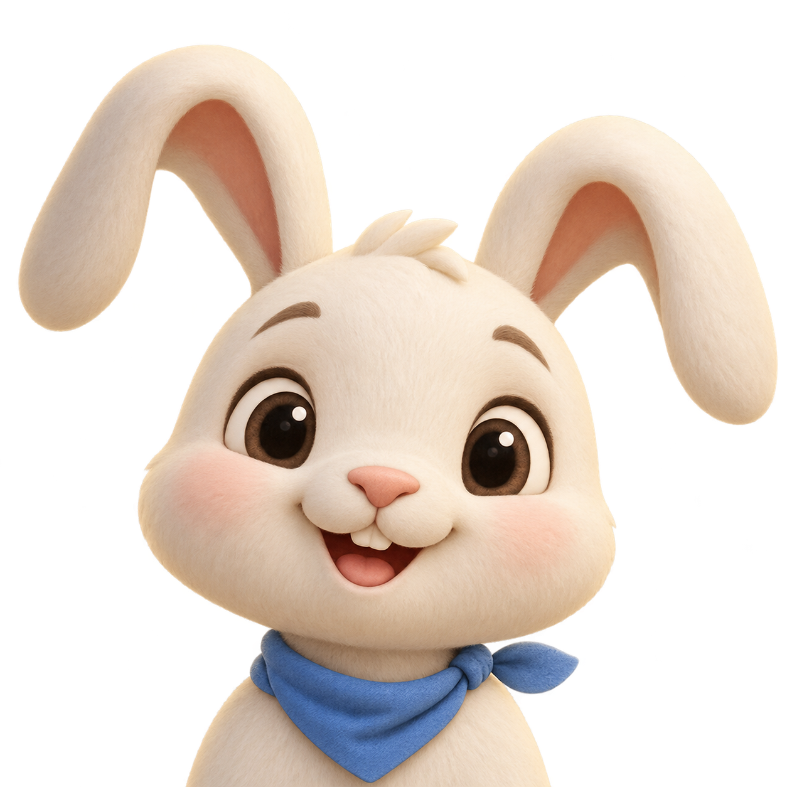
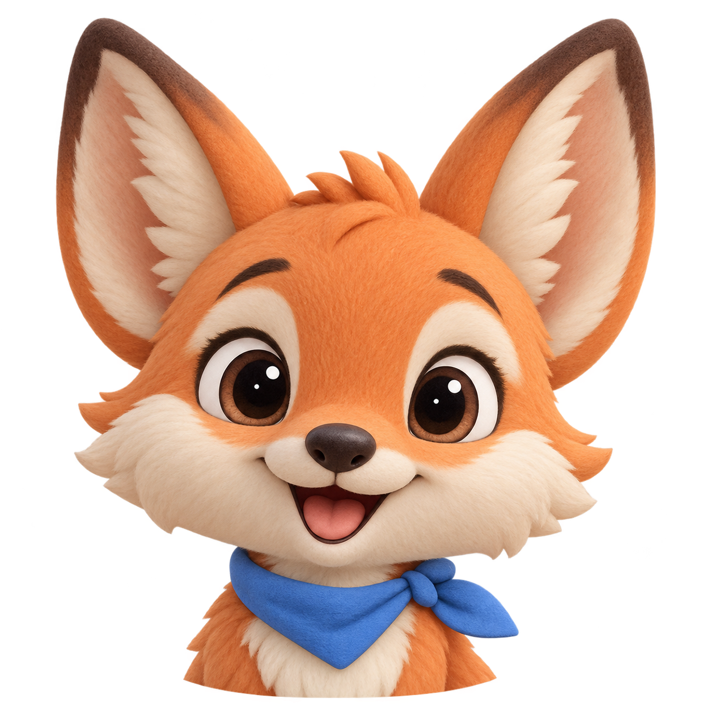

<!doctype html><html lang="zh-CN"><meta charset="utf-8"><meta name="viewport" content="width=device-width,initial-scale=1"><title>英语小芽 · 动物头像候选</title><style>
*{box-sizing:border-box}body{margin:0;background:#eff1f5;color:#4c4f69;font-family:"Microsoft YaHei",sans-serif}main{width:min(1160px,100%);margin:auto;padding:22px}header{display:flex;align-items:center;justify-content:space-between;gap:24px;margin:0 0 18px}h1{font-size:27px;margin:5px 0 8px}header p{font-size:13px;margin:0;color:#6c6f85}.eyebrow{font-size:12px;letter-spacing:2px;color:#1e66f5;font-weight:700}#picked{border-radius:16px;background:white;min-width:200px;padding:14px 18px;font-size:13px}.grid{display:grid;grid-template-columns:repeat(3,1fr);gap:16px}.card{position:relative;padding:12px 18px 14px;min-width:0;border:2px solid white;border-radius:26px;background:#fff;box-shadow:0 5px 0 #e0e4ee;text-align:left;color:inherit;cursor:pointer;transition:transform .15s}.card:hover{transform:translateY(-3px);border-color:#a1bff8}.card[aria-pressed=true]{border-color:#1e66f5;background:#eaf1ff;box-shadow:0 5px 0 #b3c9f5}.number{position:absolute;top:15px;left:15px;border-radius:12px;background:#eff1f5;padding:5px 8px;font-size:12px;font-weight:700}.art{height:clamp(150px,26vh,260px);display:flex;justify-content:center;align-items:center}.art>img{display:block;width:100%;height:100%;object-fit:contain}.label{position:relative;padding:8px 50px 0 0}h2{font-size:18px;margin:0 0 4px}.label p{margin:0;font-size:12px;color:#6c6f85}.tiny{position:absolute;right:0;bottom:0;width:40px;height:40px;object-fit:contain;border-radius:50%;background:#eff1f5;border:1px solid #dce1eb}footer{text-align:center;font-size:12px;color:#6c6f85;margin:19px 0 0}button:focus-visible{outline:3px solid #1e66f5;outline-offset:4px}@media(max-width:650px){main{padding:14px}header{display:block}#picked{margin-top:12px}.grid{grid-template-columns:repeat(2,1fr);gap:10px}.card{padding:12px}.art{height:170px}h1{font-size:23px}}
</style><main><header><div><div class="eyebrow">ENGLISH SPROUT · CHARACTER STUDY 01</div><h1>谁来做你的学习小伙伴？</h1><p>六位新朋友 · 柔软绒感 · 同一系列</p></div><div id="picked" role="status">点图标记喜欢的候选</div></header><section class="grid"><button class="card" data-name="软软兔" aria-label="选择候选01 软软兔"><span class="number">01</span><div class="art"></div><div class="label"><h2>软软兔</h2><p>好奇又温柔</p></div></button><button class="card" data-name="奶糖猫" aria-label="选择候选02 奶糖猫"><span class="number">02</span><div class="art"></div><div class="label"><h2>奶糖猫</h2><p>俏皮眨眼</p></div></button><button class="card" data-name="抱抱熊" aria-label="选择候选03 抱抱熊"><span class="number">03</span><div class="art"></div><div class="label"><h2>抱抱熊</h2><p>开心大笑</p></div></button><button class="card" data-name="小橘狐" aria-label="选择候选04 小橘狐"><span class="number">04</span><div class="art"></div><div class="label"><h2>小橘狐</h2><p>活泼小冒险家</p></div></button><button class="card" data-name="糯米熊猫" aria-label="选择候选05 糯米熊猫"><span class="number">05</span><div class="art"></div><div class="label"><h2>糯米熊猫</h2><p>软乎乎的好朋友</p></div></button><button class="card" data-name="泡泡蛙" aria-label="选择候选06 泡泡蛙"><span class="number">06</span><div class="art"></div><div class="label"><h2>泡泡蛙</h2><p>爱笑的小开心果</p></div></button></section><footer>候选预览 · 右下角为小头像效果 · 点选只做标记，尚未更换 App 头像</footer></main><script>document.querySelectorAll('.card').forEach(c=>{c.setAttribute('aria-pressed','false');c.onclick=()=>{document.querySelectorAll('.card').forEach(b=>b.setAttribute('aria-pressed','false'));c.setAttribute('aria-pressed','true');document.querySelector('#picked').textContent='喜欢这一位：'+c.dataset.name;};});</script></html>